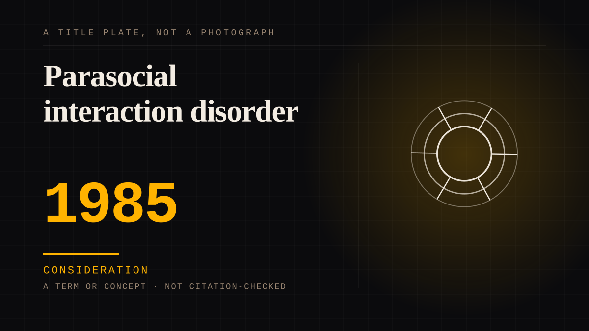

A term or concept · 1985 · Diagnosis
Parasocial interaction disorder
A clinical name for a case where a one-sided bond is causing significant distress or impairment. Named in the eighties, and it is a real diagnosis for a small number of people.

The trouble is that the disorder and the ordinary bond are the same shape. The disorder requires distress - which means you cannot identify it from the strength of the feeling alone, only by asking what it is costing. That distinction is the whole point, and it is the one most coverage of the subject skips.
Consideration. The part where somebody stops and thinks. The research, the diagnosis, the ethics, the lawsuits, the regulators. Roughly fifty years of arguing with itself about whether this is a relationship.
Same story, 6 other entries
The protagonist is a parasocial object1939 → Parasocial interaction1956 → Parasocial persuasion2015 → The K-pop intimacy economy2016 → Consent in one-sided attachment2020 → A glimpse mistaken for access2026
Where it sits
1950 1950-1999 · 1985 1999
Provenance · 1 source record(s)
- unverifiedNo specific claim is recorded against this source. The record is a pointer to the work in general; the entry's own prose is the argument and is not sourced line by line.Rubin, A. M., McVoy, S. M., & Brannan, D. (1985).
Connected · 3 out, 3 in
It sits in